Wie löse ich Matheaufgaben?
Volumen
Sie sehen ein gelbes Eingabefeld und die
Schalter: Prüfen und Lösung.
Tragen Sie Ihr Ergebnis ein, prüfen Sie es
oder starten Sie eine Lösung.
Aufgabe 267
Wie groß sind das Dachvolumen V und die mit Schindeln zu deckende Dachfläche A?
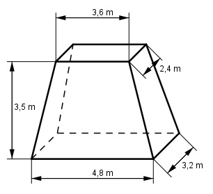
V = m3Aufgabe 268
Wie viel wiegt der Schornstein, wenn seine Dichte 1,8 kg/dm3 beträgt?
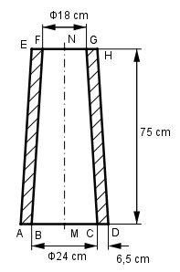
Aufgabe 269
Ein Korken ist 3,2 cm hoch, hat die Form eines Kegelstumpfes mit den Durchmessern 3,6 cm und 2,4 cm und eine Dichte von 0,24 g/cm3. Welche Masse m haben 1 000 Stück?
m = kgAufgabe 270
Ein Fabrikschornstein ist 85 m hoch, hat unten
einen Innendurchmesser von 3,6 m und oben einen
von 1,9 m. Seine radial gemessene Wandstärke
beträgt unten 1,1 m und nimmt nach oben gleich-
mäßig auf 0,25 m ab. Welche Masse m hat der
Kamin, wenn das Mauerwerk eine Dichte von
1,8 kg/dm3 hat?
Aufgabe 271
Ein Baumstamm ist 32,6 m lang, hat unten einen Umfang von 2,2 m und oben einen von 80 cm. Wie groß ist seine Masse m, wenn man ihn als Kegelstumpf auffasst und er eine Dichte von 0,75 kg/dm3 hat ?
m = kgAufgabe 272
Wie groß ist die Masse m des Verbindungsteils,
wenn seine Dichte
7,85 g/cm3 beträgt?
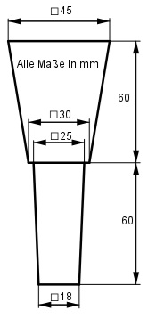
Aufgabe 273
Der Kohlenbunker ist oben offen. Wie viel m3 Kohlen fasst er, und wie groß ist der Materialbedarf M in m2?
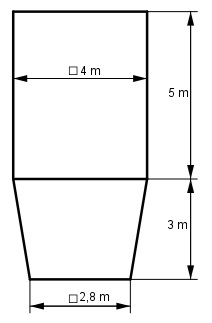
Er fasst m3.Aufgabe 274
Welche Masse m hat das Verbindungsteil, wenn seine Dichte 7,2 g/cm3 beträgt?
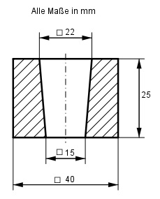
Aufgabe 275
Aus 10 m3 Beton sollen 3 gleich große Fundamente in der Form eines quadratischen Pyramidenstumpfes gegossen werden. Welche Höhe h hat ein fertiges Fundament, wenn seine Grundkante 0,8 m und seine Deckkante 0,5 m misst?
h = mAufgabe 276
Ein 55 cm langer Dreikantstahl hat die Form eines
Pyramidenstumpfes mit gleichseitigen Dreiecken
als Grund- und Deckfläche. Seitenlänge unten
20 cm, oben 5 cm. Wie groß ist der Abfall A, wenn
der Stumpf zu einer geraden Pyramide mit gleicher
Grundfläche abgeschliffen wird?
Aufgabe 277
Wie viel g Farbe braucht man, um den Auffüll- trichter außen zu streichen, wenn man mit 150 g Farbe 1 m2 streichen kann?
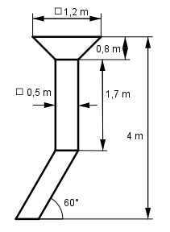
Man braucht g.Aufgabe 278
Ein Kunststoffhalbzeug in der Form eines sechs- eckigen Pyramidenstumpfes mit der Grundkante a = 4 cm, der Deckkante b = 3 cm und der Höhe h = 5 cm wird in einen gleich hohen Stumpf mit der Grundkante d = 5 cm umgepresst. Welche Seitenlänge e hat die neue Deckkante?
Aufgabe 279
Welches Volumen V hat die dargestellte Aufnahmespitze?
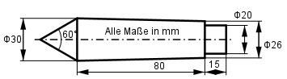
V = cm3Aufgabe 280
Wie viel cm2 Blech braucht man für die Herstellung des Kruges, wenn man für die Nahtstellen mit 5% Zuschlag rechnen muss?
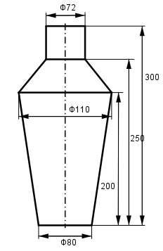
Aufgabe 281
Ein Bolzen ist 280 mm lang und hat einen Durch-
messer von 40 mm.
Wie groß ist der Materialabfall A, wenn er an
beiden Enden auf einer Länge von 80 mm auf eine
Neigung von
1 : 10 abgedreht wird?
Aufgabe 282
Welches Volumen V hat ein Eimer mit den Durchmessern 28 cm und 19 cm sowie einer Höhe von 28 cm in Litern?
Aufgabe 283
Wie viel m3 Erdreich müssen für den Wall aufgeschüttet werden?
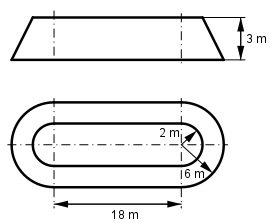
Es sind m3.Aufgabe 284
Wie viel g wiegen 100 solcher Aluminiumnieten, wenn sie eine Dichte von 2,7 g/cm3 haben?
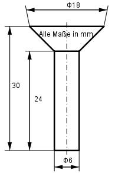
Aufgabe 285
Wie groß ist der Blechbedarf A für den Trichter, wenn man für die Nahtstellen 5% Zuschlag ansetzt?
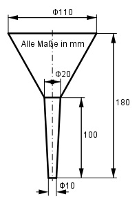
A = mm2Aufgabe 286
Wie hoch wird ein Kegelstumpf, der aus einem
Bleikegel mit einer Höhe von 5,5 cm und einem
Radius der Grundfläche von 1,5 cm gegossen wird,
wenn er gleiche Grundfläche wie der Kegel und
eine Deckfläche mit einem Radius von
0,5 cm
haben soll?
Aufgabe 287
Wie lang muss ein Rundstahl mit einem Durchmesser von 25 mm sein, aus dem ein Kegelstumpf mit einer Höhe von110 mm und den Durchmessern 48 mm und 32 mm geschmiedet werden soll, wenn für den Abbrand 3% Längenzuschlag berechnet werden?
Länge l = cmAufgabe 288
Wie viel Liter passen in den an dem Pfeiler befestigten Wasserbehälter?
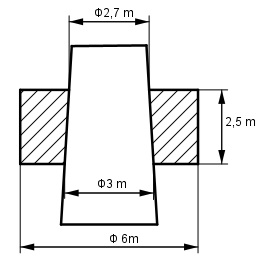
Aufgabe 289
Wie groß ist das Volumen V des in der Vorder- und Draufsicht dargestellten Zeitungsständers?
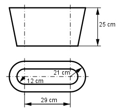
V = dm3Aufgabe 290
Wie groß ist das Volumen V der Lagerbuchse?
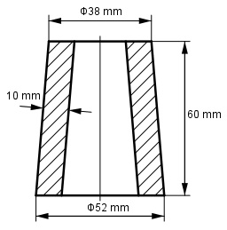
Aufgabe 291
In der voll ausgegossenen Form für Bleiguss steht das fertige blaue Gussteil mit einer Dichte von 11,34 kg/dm3 nach dem Erkalten auf einer Höhe von 2/3h. Welches Volumen V hatte das flüssige Blei mit einer Dichte von 10,64 kg/dm3?
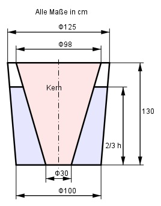
V = dm3Aufgabe 292
Welche Höhe h muss eine Kunststoffscheibe mit einem Durchmesser von 50 mm haben, damit daraus die Buchsegepresst werden kann?
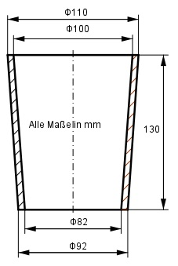
Aufgabe 293
Welche Masse m hat das Kupplungsteil bei einer Dichtevon 7,2 g/cm3?
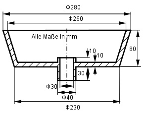
m = gAufgabe 294
Welche Masse m hat die Buchse bei einer Dichte von 8,3 g/cm3?
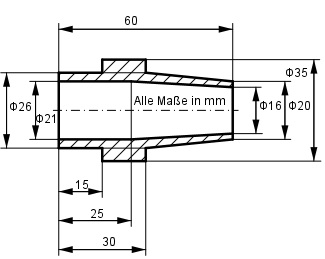
zurück